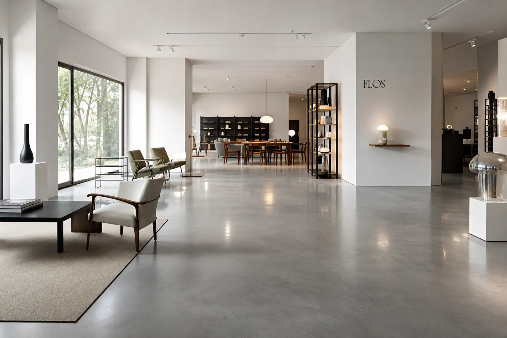
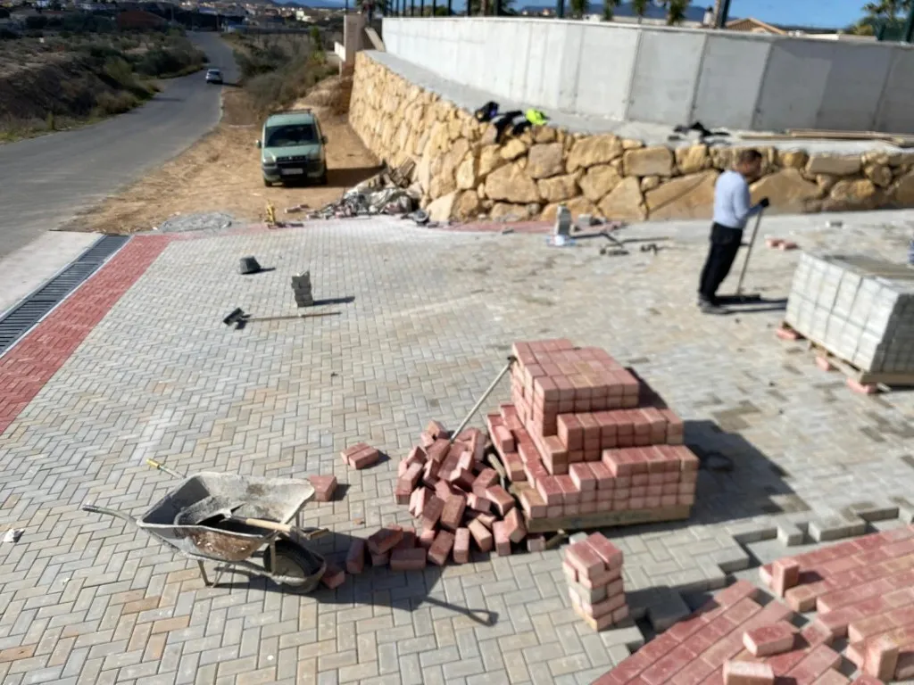
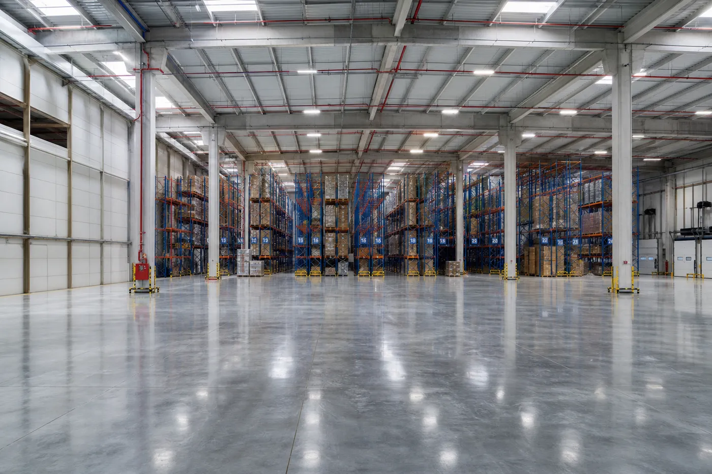
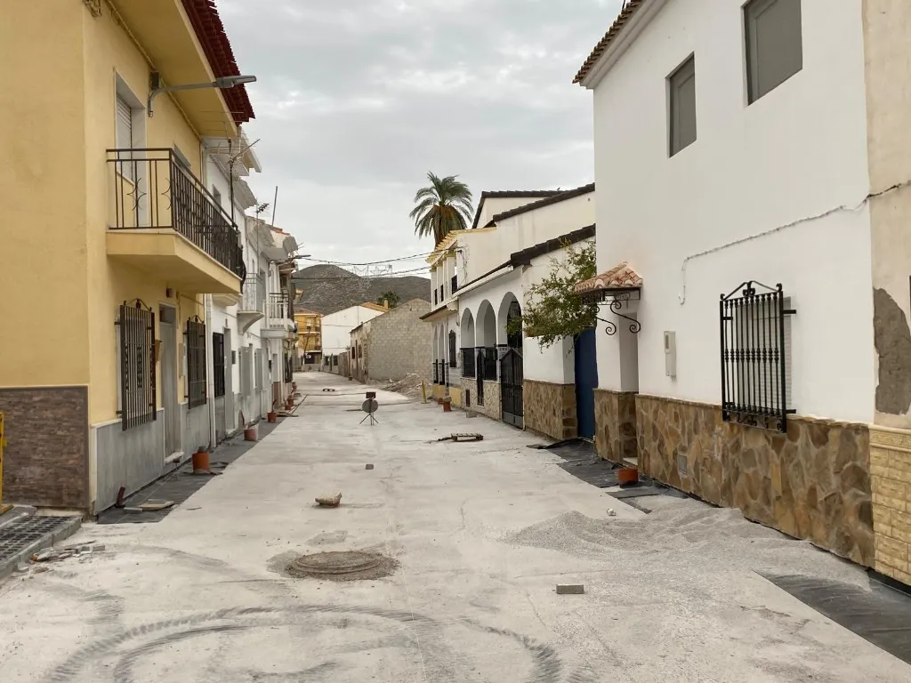
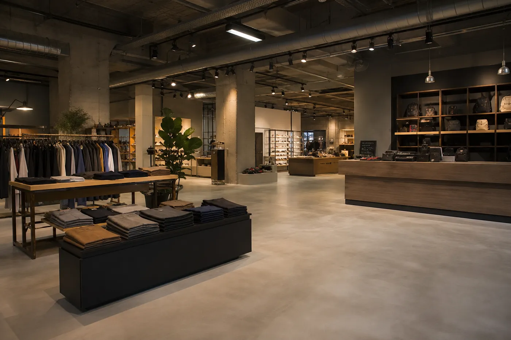

Servicios
Pavimentación y urbanización para obra civil y vía pública
Ejecutamos pavimentación, urbanización y obra civil de pavimentación con equipos propios y planificación por fases. Trabajamos con constructoras, empresas y administraciones públicas que necesitan un contratista especializado y cumplidor.
Nuestro enfoque en obra
No somos una constructora generalista: nuestro foco es la pavimentación y la urbanización exterior. Cada intervención se define en replanteo, se coordina con la dirección de obra y se ejecuta por fases para minimizar interferencias.
Nuestra base operativa está en Molina de Segura (Murcia), con proyectos en la Región de Murcia y zonas limítrofes.
Pavimentación
Ejecución de pavimentos continuos y sistemas de rodadura para accesos, calles industriales y áreas de servicio. Preparación de base, extendido, compactación y acabado según especificación del proyecto.
Qué incluye
- Replanteo y definición de alcance en obra
- Preparación y compactación de base
- Extendido y acabado del pavimento continuo
- Control de calidad en cada fase
- Coordinación con el calendario de la dirección de faena
Para constructoras y empresas que necesitan rodadura industrial o vía de servicio integrada en un proyecto mayor.
Consultar pavimentación
Colocación de adoquines
Instalación de pavimento articulado en urbanizaciones, plazas y accesos. Replanteo, base granular, colocación, sellado de juntas y remates con bordillo.
Qué incluye
- Replanteo y niveles de proyecto
- Base granular y preparación del soporte
- Colocación de adoquines y alineación
- Sellado de juntas y compactación final
- Remates con bordillo y transiciones
Urbanizaciones nuevas, renovación de espacios exteriores y zonas peatonales con acabado articulado.
Consultar adoquines
Urbanización
Obra completa de urbanización exterior: movimiento de tierras, drenaje, pavimentación y remates. Coordinación por fases para integrar la intervención en el calendario de obra.
Qué incluye
- Movimiento de tierras y explanación
- Drenaje y preparación del terreno
- Pavimentación y elementos de urbanización
- Remates, bordillos y transiciones
- Coordinación por fases con otros gremios
Promotoras y constructoras que entregan urbanizaciones completas con criterio unitario de ejecución.
Consultar urbanización
Acerados
Construcción y renovación de aceras y zonas peatonales. Nivelación, pendientes de evacuación, acabado antideslizante y transición con calzada.
Qué incluye
- Replanteo y pendientes de evacuación
- Construcción o renovación de acera
- Acabado antideslizante y control dimensional
- Transiciones con calzada y bordillos
- Criterios de accesibilidad según especificación del proyecto
Administraciones públicas e intervenciones en vía pública que exigen continuidad peatonal y remates conformes a especificación municipal.
Consultar acerados
Bordillos
Suministro y colocación de bordillos de confinamiento, delimitación y remate. Alineación, asiento y unión con pavimento existente o nuevo.
Qué incluye
- Replanteo y alineación de bordillo
- Suministro y colocación según especificación
- Asiento y unión con pavimento
- Remates en encuentros y transiciones
- Control dimensional antes de la entrega
Complemento habitual de pavimentación y urbanización; delimita rodadura, acera y espacios exteriores.
Consultar bordillos
Obra civil de pavimentación
Movimiento de tierras, explanación, drenaje, bases granulares y estructuras auxiliares vinculadas al pavimento. Trabajos previos y complementarios que condicionan el resultado final.
Qué incluye
- Movimiento de tierras y explanación
- Drenaje y preparación del soporte
- Bases granulares y estructuras auxiliares
- Coordinación con la fase de pavimentación
- Control previo a la ejecución del pavimento
Cuando la pavimentación requiere preparación previa de terreno, drenaje o base antes del sistema de pavimento definitivo.
Consultar obra civil
Servicios complementarios
Además de los servicios principales, evaluamos intervenciones complementarias según el alcance de cada proyecto. Consulta disponibilidad y encaje técnico antes de la ejecución.
-
Pavimentos prefabricados de hormigón
Suministro y colocación de elementos prefabricados de hormigón vinculados a la obra de pavimentación y urbanización. Pendiente de confirmar: catálogo, tipologías y condiciones de suministro según proyecto.
-
Reparación y mantenimiento
Intervenciones sobre pavimentos existentes: valoración de deterioro, reparación localizada y mantenimiento según estado de la obra. Pendiente de confirmar: alcance y disponibilidad operativa.
-
Pavimentos decorativos
Soluciones de acabado decorativo para espacios exteriores donde el proyecto exige criterio estético además de la función de uso. Pendiente de confirmar: sistemas y aplicaciones disponibles.
Hablemos de tu proyecto
Cuéntanos qué necesitas y prepararemos una propuesta adaptada a las características de tu obra.